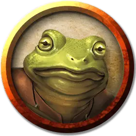

Жаболюд квакун
Bullywug Croaker
Средний Гуманоид (Жаболюд), нейтрально-злой

Класс Доспеха 15 (шкурный доспех, щит)
Хиты 33 (6к8 + 6)
Скорость 20 футов, плавая 40 футов
| мод | спас | ||
|---|---|---|---|
| СИЛ | 14 | +2 | +2 |
| ЛОВ | 12 | +1 | +1 |
| ТЕЛ | 12 | +1 | +3 |
| мод | спас | ||
|---|---|---|---|
| ИНТ | 7 | −2 | −2 |
| МДР | 15 | +2 | +2 |
| ХАР | 10 | +0 | +0 |
Навыки Восприятие +4, Скрытность +3
Чувства пассивное Восприятие 14
Языки Язык Жаболюдов
Опасность 2 (450 опыта)
Бонус мастерства +2
Особенности
Амфибия. Жаболюд может дышать и воздухом и под водой.
Общение с лягушками и жабами. Жаболюд может обмениваться простыми понятиями с лягушками и жабами, когда говорит на языке Жаболюдов.
Болотный камуфляж. Жаболюд совершает с преимуществом проверки Ловкости (Скрытность), когда пытается спрятаться на болотистой местности.
Прыжок с места. Жаболюд совершает прыжки в длину на расстояние до 20 футов и прыжки в высоту на расстояние до 10 футов, хоть с разбегом, хоть без него.
Действия
Укус. Рукопашная атака оружием: +4 к попаданию, досягаемость 5 футов, одна цель. Попадание: 5 (1к6 + 2) колющего урона.
Копье. Рукопашная или дальнобойная атака оружием: +4 к попаданию, досягаемость 5 футов или дистанция 20/60 футов, одна цель. Попадание: 5 (1к6 + 2) колющего урона или 6 (1к8 + 2) колющего урона, если используется двумя руками для совершения рукопашной атаки.
Глаар-пат (3/день). Квакун поёт песню болотистой погибели. Каждое выбранное существо в пределах 30 футов от квакуна, которое может услышать песню, должно совершить спасбросок Мудрости Сл 12, получая 9 (2к8) урона психической энергией при провале или половину этого урона в случае успеха. Существо, которое проваливает этот спасбросок, также получает помеху на спасброски совершаемые ею до конца своего следующего хода.
Рооооо-глог (1/день). Квакун поёт оду старшему лягемоту. Каждый жаболюд в пределах 30 футов от квакуна, который может услышать песню, получает 10 временных хитов.
Описание
Некоторые жаболюды рождаются со способностью вплетать магию в свои песни. Эти редкие экземпляры выращиваются в охраняемых анклавах, где их учат использовать свою магию как для исцеления, так и для нанесения урона. Как было продемонстрировано в "Опасность в Дануотере", они являются одними из самых напыщенных жаболюдов.